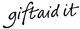

We have made the commitment via our Building on Distinction program to ‘produce young men who are confident, able and responsible’. To ensure this we must maximise the advantages of our campus and location. We have an ambition estate plan for the next few years with our primary target being the completion of our new Music Hall. We need help from the Queen Elizabeth community to realize this goal. There are many ways to help contribute to the development of our school. We hope the plans below offer choice and flexibility, but if you would like to speak to someone about making a donation to the school, please contact the Development Office for a chat.
Our new Music Hall is the current focus of our Capital Projects Fund. Explore the possibility of naming a practice room or inclusion on our donors wall. Please speak to the Development office for further information. Click here for our Online Payments Page or here for our Bank and Cheque details
As we approach our 450th Anniversary we have decided to inaugurate the 1573 Club. This commemorates the foundation of the school, by Robert Dudley, in 1573. Members of the 1573 Society give a regular gift, equivalent to £1573 per annum, via direct debit. We are keen for Society members to be recognised by having their name handwritten in calligraphy in the Queen Elizabeth's School Endowment Book, which they will also be offered the opportunity to sign and will be on display in the school Archive. Each year, members will be invited to the annual Benefactors Garden Party, in addition to receiving a special lapel pin. Please click on the 1573 Club button above for more details.
We are grateful for every donation made to Queen Elizabeth. If you would like to make a singular or regular donation, please just click on the button above and you will be re-directed to our payment page. Please remember to fill in your Gift Aid details.
Once you have made provision for family and other loved ones in your Will, please consider leaving a legacy to Queen Elizabeth's School. All bequests will go towards ensuring that Queen Elizabeth's can continue to offer the very best in education to future generations of pupils. Please email the Senior Development Office to set up a confidential discussion. Please click on the Legacy button above for more details.
Why not consider sponsoring one of our Extra Curricular groups. The school has an active program of Sports, Music, Drama and other events. We feel these activities create opportunities for pupils to experience a broad range of social and cultural activities and allows the school to celebrate the diverse skills, talents and achievements of all our pupils. Please speak to the Development office for more details.